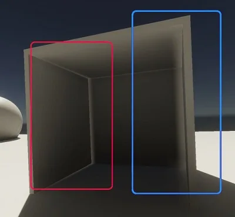
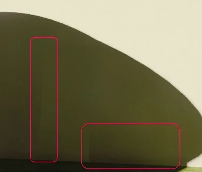

Light leaks are areas that are too light or dark, often in the corners of a wall or ceiling.

Light leaks often occur when geometry receives light from a Light Probe that isn’t visible to the geometry, for example because the Light Probe is on the other side of a wall. Adaptive Probe Volumes use regular grids of Light Probes, so Light Probes might not follow walls or be at the boundary between different lighting areas.
To fix light leaks, you can do the following:
Adjust walls so their width is closer to the distance between probes in the local brick
You can add a Volume, then add an Adaptive Probe Volumes Options override to the Volume. This adjusts the position that GameObjects use to sample the Light Probes.
Volumes only affect the scene if the camera is near or inside the volume. Refer to Understand volumes for more information.
Refer to Probe Volumes Options Override reference for more information on Adaptive Probe Volumes Options settings.
You can configure the Rendering Layer Masks in the Adaptive Probe Volumes panel in the Lighting window. This allow APV to assign a Rendering Layer Mask to each Light Probe.
For performance reasons, Adaptive Probe Volumes only supports up to 4 Rendering Layers Masks. You can use the list to create a new mask and use the dropdown to assign it any Rendering Layer. When lighting is generated, Unity will try to automatically assign a mask to each probe by looking at the Rendering Layer Masks of objects surrounding the probe. Additionally, you can use a Probe Adjustment Volume to override the Rendering Layer Mask assigned to Light Probes.
At runtime, renderers will only sample lighting data from probes that have a matching Rendering Layer Mask. If the object doesn’t match any of the Masks defined in the Lighting window, it will sample lighting from all the valid surrounding probes. Note that this feature requires Use Rendering Layers to be enabled in the URP asset.
For example, in order to fix light leaking issues, you can create an Interior and an Exterior Rendering Layer Mask to ensure interior objects will never sample lighting data from exterior probes and fix light leaking through the walls. A renderer can have several Rendering Layers enabled in it’s Rendering Layer Masks. This is useful when dealing with dynamic objects that may want to sample lighting from both the exterior and interior probes.
You can visualize which layers are assigned to a probe: - Go to the Probe Volumes tab - Enable Display Probes - Set the Probe Shading Mode field to Rendering Layer Masks - Use the toggles in the Scene View Overlay to hide Probes matching a Rendering Layer Mask
If adding a Volume doesn’t work, use the Adaptive Probe Volumes panel in the Lighting window to adjust Virtual Offset and Dilation settings.
Note: Don’t use very low values for the settings, or Dilation and Virtual Offset might not work.
Use a Probe Adjustment Volume component to make Light Probes invalid in a small area. This triggers Dilation during baking, and improves the results of Leak Reduction Mode at runtime.
Using a Probe Adjustment Volume component solves most light leak issues, but often not all.
If you use many Probe Adjustment Volumes in a scene, your bake will be slower, and your scene might be harder to understand and maintain.
Refer to Probe Adjustment Volume component reference for more information.
Seams are artefacts that appear when one lighting condition transitions immediately into another. Seams are caused when two adjacent bricks have different Light Probe densities. Refer to bricks for more information.

To fix seams, do the following: